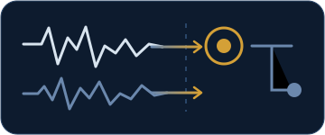
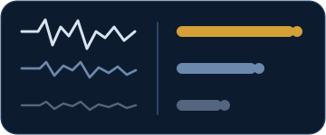
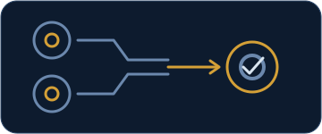
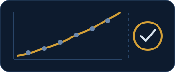

Condition monitoring for industrial motors
Clarity in industrial noise
Practical condition monitoring designed to distinguish meaningful machine change from surrounding disturbance and turn sustained evidence into a clear advisory.
Initial pilot validation: 17–22 kW fixed-speed squirrel-cage induction motors.
Demonstration running

Why EchoShift
Machines do not operate in isolation
Industrial motors power conveyors, pumps, fans, compressors and other essential processes. They operate alongside surrounding equipment, structural vibration, changing loads and environmental disturbance. Condition monitoring becomes valuable when it can separate that background activity from meaningful change in the monitored machine.

Current capability
Focused motor monitoring, built toward broader rotating-asset coverage
The first pilot configuration is deliberately focused so sensing, evidence handling and advisory behaviour can be validated properly. Development then broadens through staged validation.

- 1× rotational evidence
- Coupling alignment context
- Mounting / looseness evidence
- Temperature context
- Pilot validation
- 17–22 kW fixed-speed squirrel-cage induction motors
- Current monitoring
- Continuous vibration with temperature context
- Current conditions
- Developing unbalance, misalignment and mechanical looseness
- Development direction
- Selected fixed-speed motors from smaller units through to approximately 90 kW, followed by suitable pumps, conveyors, fans and compressors
- Later phases
- Variable-speed, geared and higher-power rotating assets
How EchoShift works
Trust before prediction
The distinction introduced in the hero is explained through four connected evidence principles.

Environmental arbitration
Reference measurements help identify when surrounding activity is influencing the monitored asset.

Trust-weighted evidence
Evidence is interpreted according to the quality and reliability of the underlying measurement.

Cross-location agreement
A developing condition becomes more credible when independent machine locations support the same interpretation.

Explainable confidence
EchoShift accumulates sustained evidence instead of reacting to every isolated change.
Continuous measurementsTrusted featuresShaft-harmonic evidenceAccumulated confidenceAdvisory
Next
Who EchoShift is forSee whether the approach fits your team.
 Continuous measurements
Continuous measurements Trusted features
Trusted features Shaft-harmonic evidence
Shaft-harmonic evidence Accumulated confidence
Accumulated confidence Advisory
AdvisoryWho it is for
A practical first step for manufacturers that already recognise the value of predictive maintenance
EchoShift is being developed for maintenance and engineering teams that want credible evidence from motor-driven assets without beginning with a large enterprise transformation programme.
Pilot deployment
A focused first step into practical condition monitoring
- 01
Select suitable motors
Identify a small number of appropriate induction motors and establish the operating context.
- 02
Install and commission
Deploy the monitoring system and establish the asset baseline.
- 03
Observe machine evidence
Review baseline behaviour, environmental context and any sustained advisory progression.
- 04
Evaluate practical value
Assess usability, evidence quality and suitability for wider deployment.


Focused pilot deployment
Start with a motor-monitoring pilot
For UK manufacturers that already recognise the value of predictive maintenance and want a practical, credible first deployment.